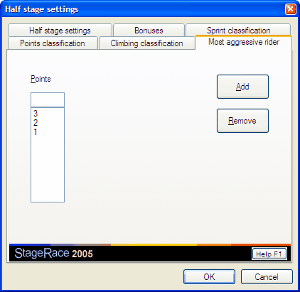

For every half stage you can set up a scheme of points for the most aggressive rider classification.
The most aggressive riders classification has little to do with stage classifications, but are simply determined by e.g. jury members or team captains.
For most aggressive rider classifications a separate publication is generated, which lists the competitors and their points from the particular half stage as well as the general most aggressive rider classification.
The most general aggressive rider classifications is calculated in the same way as the sprint classification. The same ranking settings also apply.
The configuration of most aggressive rider points will be done by use of the tab sheet Most aggressive rider of the configuration of the particular half stage. This can be found through in the menu, when the appropriate half stage is selected in the event tree.

On the tab sheet there is a list Points to enter the points for the half stage's most aggressive rider classification. The points in this list correspond to the successive rankings, starting from 1.
To add points, the number of points has to be entered in the field above the list and Add has to be clicked.
There is no real limit to the amount of points entries that you can enter.
If a points entry is selected from the list, it can be deleted by clicking Remove.
By entering no points entries at all, the Most aggressive rider competition item will subsequently be removed from the event tree.